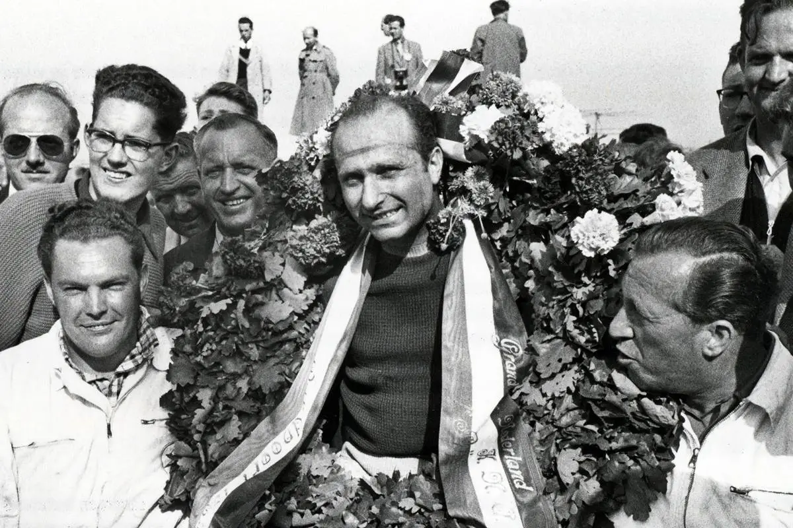
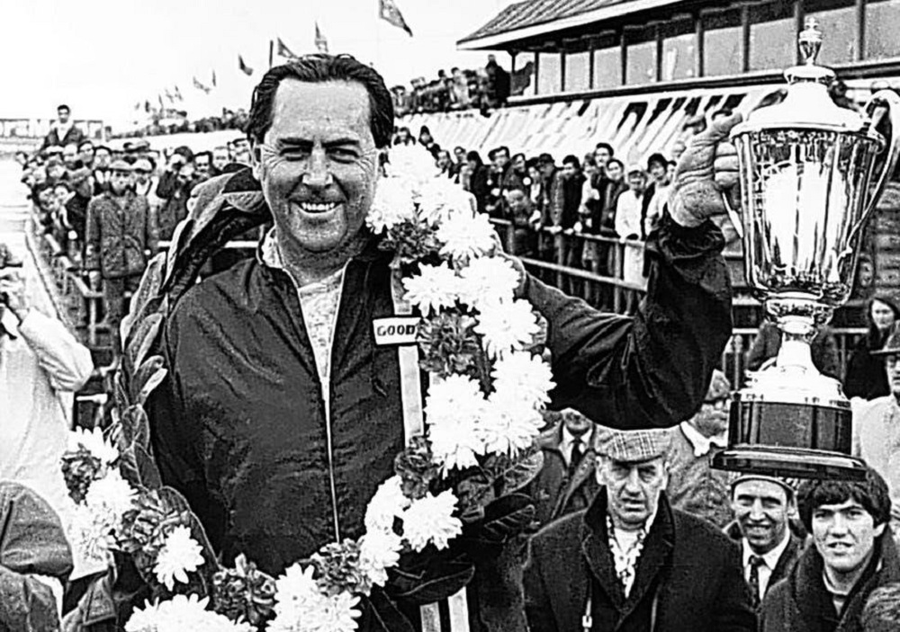
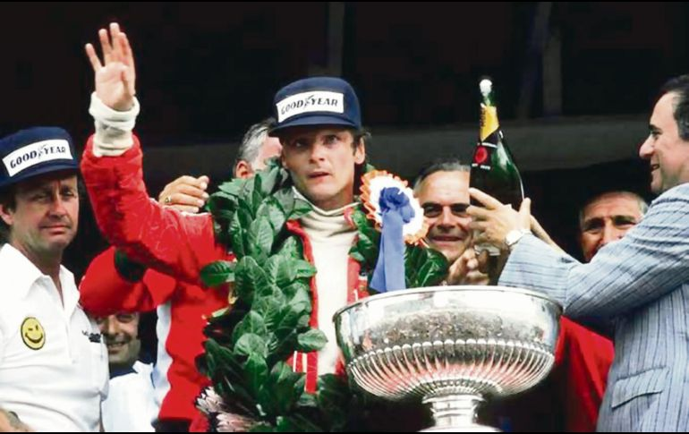
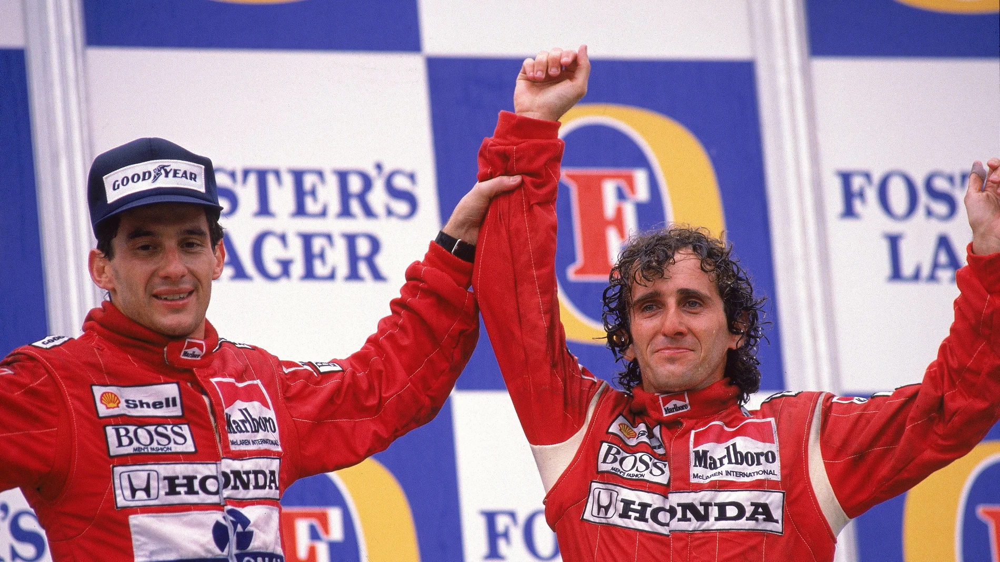
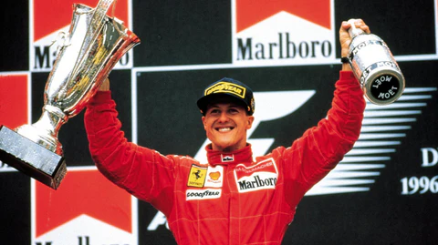
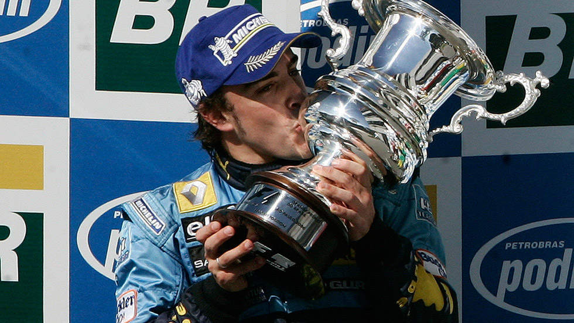
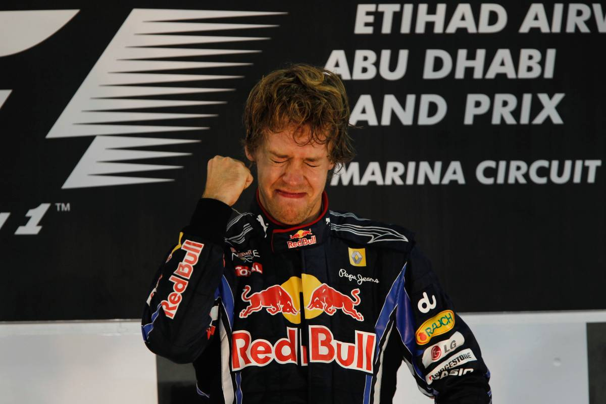
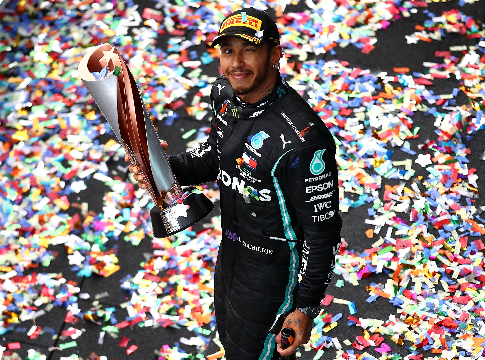
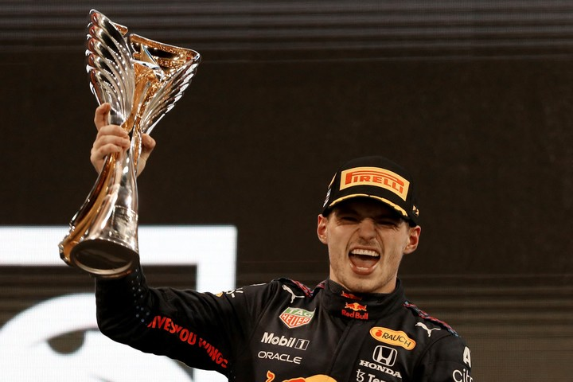

Historia










Campeones
Multicampeones
- Michael Schummacher.
1994, 1995, 2000, 2001, 2002, 2003, 2004.
- Lewis Hamilton.
2008, 2014, 2015, 2017, 2018, 2019, 2020.
7 Titulos mundiales.
- Juan Manuel Fangio.
1951, 1954, 1955, 1956, 1957.
5 Titulos mundiales.
Tetracampeones
- Alain Prost.
1985, 1986, 1989, 1993.
- Sebastian Vettel.
2010, 2011, 2012, 2013.
- Max Verstappen.
2021, 2022, 2023, 2024.
4 Titulos mundiales.
Tricampeones
- Jack Brabham.
1959, 1960, 1966.
- Jackie Stewart.
1969, 1971, 1973.
- Niki Lauda.
1975, 1977, 1984.
- Nelson Piquet.
1981, 1983, 1987.
- Ayrton Senna.
1988, 1990, 1991.
3 Titulos mundiales.
Bicampeones
- Alberto Ascari.
1952, 1953.
- Jim Clark.
1963, 1965.
- Graham Hill.
1962, 1968.
- Emerson Fittipaldi.
1972, 1974.
- Mika Häkkinen.
1998, 1999.
- Fernando Alonso.
2005, 2006.
2 Titulos mundiales.
Monocampeones
- Giuseppe Farina.
1950.
- Mike Hawthorn.
1958.
- Phil Hill.
1961.
- John Surtees.
1964.
- Denny Hulme.
1967.
- Jochen Rindt.
1970.
- James Hunt.
1976.
- Mario Andretti.
1978.
- Jody Scheckter.
1979.
- Alan Jones.
1980.
- Keke Rosberg.
1982.
- Nigel Mansell.
1992.
}
- Damon Hill.
1996.
- Jacques Villeneuve.
1997.
- Kimi Räikkönen.
2007.
- Jenson Button.
2009.
- Nico Rosberg.
2016.